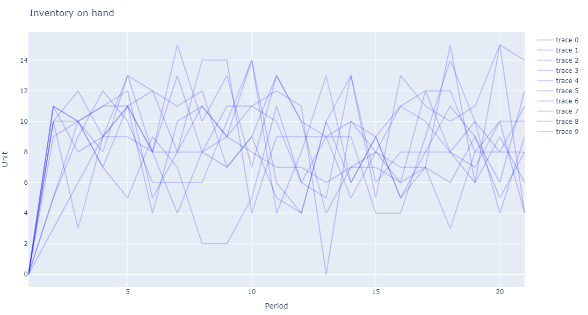

SupplyChainSimulation
SupplyChainSimulation is a package to model and simulate supply chains.
The simulation is built around a loop that keeps track of orders and inventory movements:
- receive_inventory
- place_orders
- receive_orders
- send_inventory
Each step can be customized by applying different policies. The policies can also be optimized to improve the supply chain performance.
Installation
SupplyChainSimulation can be installed using the Julia package manager. From the Julia REPL, type ] to enter the Pkg REPL mode and run
pkg> add SupplyChainSimulationGetting started
The first step to use SupplyChainSimulation is to define the supply chain components. This is done by specifying the products, suppliers, storage locations, and customers.
In the example below we define one product, one supplier, one storage location, and one customer.
horizon = 20
product = Product("product")
supplier = Supplier("supplier")
storage = Storage("storage")
add_product!(storage, product; unit_holding_cost=1.0)
customer = Customer("customer")
l1 = Lane(storage, customer)
l2 = Lane(supplier, storage)The second step is to define the starting states. The initial states represent the supply chain network at the start of the simulation. More than one initial state can be defined to represent potential different situations that have to be simulated or optimized. For example we could have several demand scenarios. In our example, we will create 10 such scenarios with different demand from the customer.
n() = begin
network = SupplyChain(horizon)
add_supplier!(network, supplier)
add_storage!(network, storage)
add_customer!(network, customer)
add_product!(network, product)
add_lane!(network, l1)
add_lane!(network, l2)
add_demand!(network, customer, product, rand(Poisson(10), horizon) * 1.0; sales_price=1.0, lost_sales_cost=1.0)
return network
end
initial_states = [n() for i in 1:10]The third step is to define the policies that we want to use. In this example we use an order up to policy that will place an order to replenish the inventory back to a given value.
policy = OnHandUptoOrderingPolicy(0)
policies = Dict((l2, product) => policy)The next step is to run the simulation or the optimization (depending on whether you already know the policies you want to use or whether you want to find the best policies). In our example we will search the best policy by running the optimizer.
optimize!(policies, initial_states...)
final_states = [simulate(initial_state, policies) for initial_state in initial_states]The final step is to analyze the results. There are various function we can call to get information such as the orders that have been placed, the inventory on hand at any time, and more. There are also plotting functions which provide the information in a graphical way. In our example we will plot the amount of inventory at the storage location over time.
plot_inventory_onhand(final_states, storage, product)The resulting plot is shown below.

Policies
The package comes with several policies predefined, including:
- QuantityOrderingPolicy: Orders a given quantity specific to each time period. The quantity ordered is the same across scenarios and irrespective of the current inventory position.
- OnHandUptoOrderingPolicy: Orders up to a given number based on the number of units on hand; no matter what is on order.
- NetUptoOrderingPolicy: Orders up to a given number based on the net number of units (on hand + in transit + on order - on backlog).
- NetSSOrderingPolicy: Orders up to a given number based on the net number of units (on hand + in transit + on order - on backlog) if the net inventory is below a threshold.
Creating a new policy
Creating a new policy is easy and can be done in two steps:
- Create a new struct to represent your policy. This struct can hold the data you need to compute the orders. For example, let's say that we want to create a policy that orders always the same amount. We will create the following strut
mutable struct SameOrderPolicy <: InventoryOrderingPolicy
order::Int64
end- Implement the following functions:
function get_parameters(policy::SameOrderPolicy)
return [policy.order]
end
function set_parameters!(policy::SameOrderPolicy, values::Array{Float64, 1})
policy.order = Int.(round.(values[1])) # sets the value of the order to the value provided by the optimizer
end
function get_order(policy::SameOrderPolicy, state, env, location, lane, product, time)
return policy.order # returns the order when running the policy during a simulation
endOnce the policy is defined it can be used either as part of a simulation run where the order is defined by you, or as part of an optimization run where the optimizer will find the best order to minimize the cost function.
Common models
In this section we will review some common inventory models and how to implement them with SupplyChainSimulation.jl.
Economic Ordering Quantity (EOQ)
The Economic Ordering Quantity helps us balance the cost of ordering and the cost of holding inventory by optimizing the order quantity. The higher the ordering cost, the less often we want to order and therefore the bigger the quantity we want to order. The higher the holding cost, the less inventory we want to order and therefore the smaller the quantity we want to order. The EOQ is the order quantity that best balances these two costs. In the example below, we will consider a demand of 10 units per period, an ordering cost of 10 and a holding cost of .1 per unit per period.
We can get the EOQ by running the following code.
eoq_quantity(10, 10, 0.1)The answer is approximately 44.7.
We can also use the simulation as follows.
horizon = 50
product = Product("product")
supplier = Supplier("supplier")
storage = Storage("storage")
add_product!(storage, product; unit_holding_cost=0.1)
customer = Customer("customer")
l1 = Lane(storage, customer)
l2 = Lane(supplier, storage, fixed_cost=10)
n() = begin
network = SupplyChain(horizon)
add_supplier!(network, supplier)
add_storage!(network, storage)
add_customer!(network, customer)
add_product!(network, product)
add_lane!(network, l1)
add_lane!(network, l2)
add_demand!(network, customer, product, repeat([10.0], horizon); sales_price=1.0, lost_sales_cost=1.0)
return network
end
policy = NetSSOrderingPolicy(0, 0)
policies = Dict((l2, product) => policy)
initial_states = [n() for i in 1:1]
optimize!(policies, initial_states...)
println(policy)The result is a policy (0, 40). We order 40 units when the inventory goes down to 0. This matches the EOQ we computed above.
Safety Stock
Let's extend the example above by making the demand stochastic and have a lead time of 2 period for the storage replenishment. The code is very similar to that above and looks as follows.
horizon = 50
product = Product("product")
supplier = Supplier("supplier")
storage = Storage("storage")
add_product!(storage, product; unit_holding_cost=0.1)
customer = Customer("customer")
l1 = Lane(storage, customer)
l2 = Lane(supplier, storage; fixed_cost=10, time=2)
n() = begin
network = SupplyChain(horizon)
add_supplier!(network, supplier)
add_storage!(network, storage)
add_customer!(network, customer)
add_product!(network, product)
add_lane!(network, l1)
add_lane!(network, l2)
add_demand!(network, customer, product, rand(Poisson(10), horizon) * 1.0; sales_price=1.0, lost_sales_cost=1.0)
return network
end
policy = NetSSOrderingPolicy(0, 0)
policies = Dict((l2, product) => policy)
initial_states = [n() for i in 1:20]
optimize!(policies, initial_states...)
println(policy)Now the best policy is (20, 60). The safety stock of 20 helps avoid stock out while the reorder quantity stays 40 units above the safety stock as in the EOQ example above.
Beer game
The beer game is a common supply chain setup used to teach inventory management. The supply chain is composed of 5 entities: a customer, a retailer, a wholesaler, a factory and a supplier. There is a lead time between each echelon in the supply chain. The question is how best to manage this supply chain.
We can mode this setup with SupplyChainSimulation.jl as follows.
product = Product("product")
customer = Customer("customer")
retailer = Storage("retailer")
add_product!(retailer, product; initial_inventory=20, unit_holding_cost=0.1)
wholesaler = Storage("wholesaler")
add_product!(wholesaler, product; initial_inventory=20, unit_holding_cost=0.1)
factory = Storage("factory")
add_product!(factory, product; initial_inventory=20, unit_holding_cost=0.1)
supplier = Supplier("supplier")
horizon = 20
l = Lane(retailer, customer; unit_cost=0)
l2 = Lane(wholesaler, retailer; unit_cost=0, time=2)
l3 = Lane(factory, wholesaler; unit_cost=0, time=2)
l4 = Lane(supplier, factory; unit_cost=0, time=4)
policy2 = NetUptoOrderingPolicy(0)
policy3 = NetUptoOrderingPolicy(0)
policy4 = NetUptoOrderingPolicy(0)
policies = Dict(
(l2, product) => policy2,
(l3, product) => policy3,
(l4, product) => policy4)
n() = begin
network = SupplyChain(horizon)
add_supplier!(network, supplier)
add_storage!(network, factory)
add_storage!(network, wholesaler)
add_storage!(network, retailer)
add_customer!(network, customer)
add_product!(network, product)
add_lane!(network, l)
add_lane!(network, l2)
add_lane!(network, l3)
add_lane!(network, l4)
add_demand!(network, customer, product, rand(Poisson(10), horizon) * 1.0; sales_price=1.0, lost_sales_cost=1.0)
return network
end
initial_states = [n() for i in 1:30]
optimize!(policies, initial_states...)The optimizer will then run and return the best policies.
If you run this code you will see that the policies do extremely well with no bullwhip effect. Inventory management solved? Not fully. Let's note that (1) the policies are tuned to a specific scenario (albeit stochastic) and (2) the optimizer optimizes across echelons (as if the whole supply chain is integrated). This is a best case scenario. Different setups can be tested. For example you can add more scenarios or you can change the policies to limit what they can see. Depending on the setup the bullwhip effect can be more or less strong. Being able to simulate these results is on key advantage of using SupplyChainSimulation.jl.
API
SupplyChainSimulation.BackwardCoverageOrderingPolicy — TypeOrders inventory to cover the coming periods based on past demand.
SupplyChainSimulation.Env — TypeContains information about the environment of the simulation, including the network configuration.
SupplyChainSimulation.ForwardCoverageOrderingPolicy — TypeOrders inventory to cover the coming periods based on the mean forecasted demand.
SupplyChainSimulation.NetSSOrderingPolicy — TypeOrders up to a given number based on the net number of units (on hand + in transit + on order - on backlog) if the net inventory is below a threshold.
SupplyChainSimulation.NetUptoOrderingPolicy — TypeOrders up to a given number based on the net number of units (on hand + in transit + on order - on backlog).
SupplyChainSimulation.OnHandUptoOrderingPolicy — TypeOrders up to a given number based on the number of units on hand; no matter what is on order.
SupplyChainSimulation.ProductQuantityOrderingPolicy — TypeOrders a given quantity at a given time period.
SupplyChainSimulation.QuantityOrderingPolicy — TypeOrders a given quantity specific to each time period.
SupplyChainSimulation.SingleOrderOrderingPolicy — TypePlaces a single order at a given time.
SupplyChainSimulation.State — TypeContains information about the historical and current state of the simulation, including inventory positions and pending orders.
SupplyChainSimulation.Trip — TypeA trip is the basis of transportation in the simulation. It follows a route with a given departure time.
SupplyChainSimulation.eoq_cost_rate — Methodeoq_cost_rate(demand_rate, ordering_cost, holding_cost_rate)
Computes the total cost per time period of ordering the economic ordering quantity.
See also [`eoq_quantity`](@ref).SupplyChainSimulation.eoq_interval — Methodeoq_interval(demand_rate, ordering_cost, holding_cost_rate)
Computes at what interval the economic ordering quantity is ordered.
See also [`eoq_quantity`](@ref).SupplyChainSimulation.eoq_quantity — Methodeoq_quantity(demand_rate, ordering_cost, holding_cost_rate, backlog_cost_rate)
Computes the economic ordering quantity that minimizes overall costs (ordering costs + holding costs) while meeting demand.SupplyChainSimulation.eoq_quantity — Methodeoq_quantity(demand_rate, ordering_cost, holding_cost_rate)
Computes the economic ordering quantity that minimizes overall costs (ordering costs + holding costs) while meeting demand.SupplyChainSimulation.get_horizon — Methodget_horizon(state::State)
Gets the number of steps in the simulation.SupplyChainSimulation.get_in_transit_inventory — Methodget_in_transit_inventory(state::State, to::Location, product::Product, time::Int64)::Int64
Gets the number of units of a product in transit to a location at a given time.SupplyChainSimulation.get_inbound_orders — Methodget_inbound_orders(state::State, location::Location, product::Product, time::Int64)::Int64
Gets the number of units of a product on order to a location (but not yet shipped there) at a given time.SupplyChainSimulation.get_locations — Methodget_locations(supplychain)
Gets all the locations in the supplychain.SupplyChainSimulation.get_outbound_orders — Methodget_outbound_orders(state::State, location::Location, product::Product, time::Int64)::Int64
Gets the number of units of a product on order at a location (and not yet shipped out) at a given time.SupplyChainSimulation.get_parameters — Methodget_parameters(policy::BackwardCoverageOrderingPolicy)
Gets the parameters for the policy.SupplyChainSimulation.get_parameters — Methodget_parameters(policy::ForwardCoverageOrderingPolicy)
Gets the parameters for the policy.SupplyChainSimulation.get_parameters — Methodget_parameters(policy::NetSSOrderingPolicy)
Gets the parameters for the policy.SupplyChainSimulation.get_parameters — Methodget_parameters(policy::NetUptoOrderingPolicy)
Gets the parameters for the policy.SupplyChainSimulation.get_parameters — Methodget_parameters(policy::OnHandUptoOrderingPolicy)
Gets the parameters for the policy.SupplyChainSimulation.get_parameters — Methodget_parameters(policy::QuantityOrderingPolicy)
Gets the parameters for the policy.SupplyChainSimulation.get_parameters — Methodget_parameters(policy::ProductQuantityOrderingPolicy)
Gets the parameters for the policy.SupplyChainSimulation.get_total_demand — Methodget_total_demand(state)
Gets the total demand (in unit) for the state.SupplyChainSimulation.get_total_holding_costs — Methodget_total_holding_costs(state)
Gets the total holding costs for the state.SupplyChainSimulation.get_total_lost_sales — Methodget_total_lost_sales(state)
Gets the total lost sales (in unit) for the state.SupplyChainSimulation.get_total_sales — Methodget_total_sales(state)
Gets the total sales (in unit) for the state.SupplyChainSimulation.get_total_trip_fixed_costs — Methodget_total_trip_fixed_costs(state)
Gets the total transportation fixed costs.SupplyChainSimulation.get_total_trip_unit_costs — Methodget_total_trip_unit_costs(state)
Gets the total transportation unit costs.SupplyChainSimulation.optimize! — Methodoptimize!(supplychain::SupplyChain, lane_policies, initial_states...; cost_function)
Optimizes the inventory policies in the supply chain by simulating the inventory movement starting from the initial states and costing the results with the cost function.SupplyChainSimulation.plot_inventory_movement — Methodplot_inventory_movement(state, product)
Plots the inventory movement of a product through the supply chain through time.SupplyChainSimulation.plot_inventory_onhand — Methodplot_inventory_onhand(state::State, location::Location, product)
Plots the inventory on hand of a product at a location over time.SupplyChainSimulation.plot_inventory_onhand — Methodplot_inventory_onhand(state::Array{State, 1}, location::Location, product)
Plots the inventory on hand of a product at a location over time for multiple scenarios.SupplyChainSimulation.plot_inventory_onhand — Methodplot_inventory_onhand(state::State, locations::::Array{L, 1}, product) where L <: Location
Plots the inventory on hand of a product over time for multiple locations.SupplyChainSimulation.receive_orders! — Methodreceive_orders!(state::State, env::Env, orders)
Receives the orders that have been placed.SupplyChainSimulation.simulate — Methodsimulate(env::Env, policies, initial_state::State)
Simulates the supply chain for horizon steps, starting from the initial state.